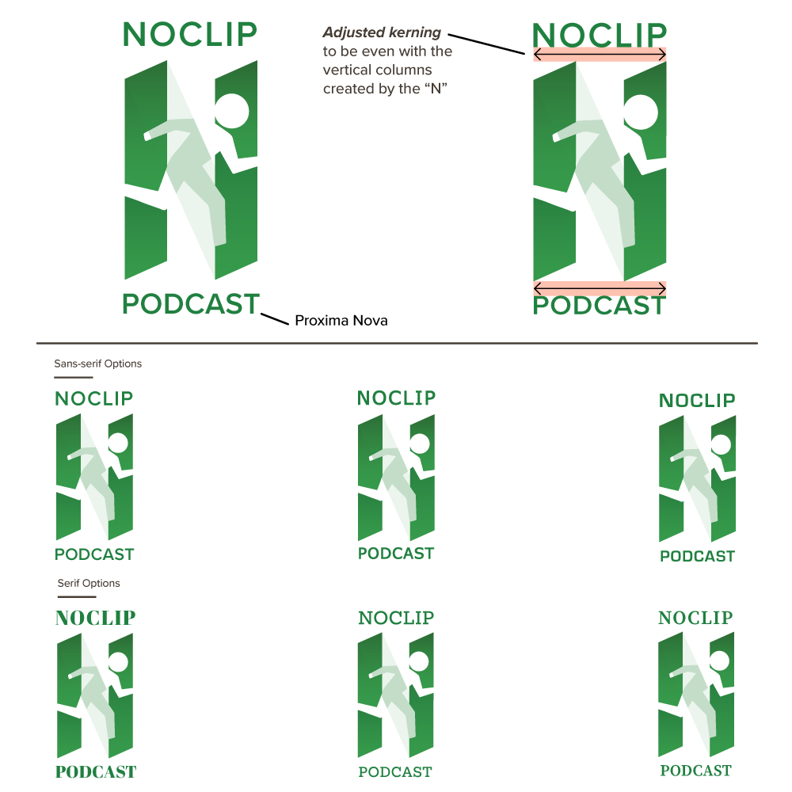

This project was to pcik brand colors, create a logo and style guide, as well as create unique art for each individual episode of the Noclip Podcast. This has been a very rewarding project that continues to this day.
Walking through walls
During the brainstorming phase, I found that “noclip mode” is a form cheat code that lets a player pass through objects in a video game, such as walls or other players. During my exploration, I focused in on the concept of depicting a character passing through a wall. I experimented with several ways to abstract this idea and refine it into a strong, readable symbol.
After my exploration, I experimented with several ways to represent this complex logo concept. In the end, I ended up combining the strongest elements of multiple ideas to arrive at the final result. I used a capital “N” to represent a wall. I then gave the crossbar 10% opacity, and placed the silhouette of the “player character” passing through the entire logo mark.
Finding the right modern typeface
A video game podcast needs a modern approachable typeface to grab a potential listeners attention. While exploring a variety of options, it became clear to me that the logo needed a font that could align well with the two vertical columns created by the “N”. After narrowing in on several options, Proxima Nova felt lik e the font that had the best balance with the weight of the logo mark itself.
Podcast episode art
For presentation in episode art, the logo for the podcast and the logo or iconography from the video game being discussed can be combined. This creates an interesting result where the logo remains recognizable while conveying what the episode is about at the same time.